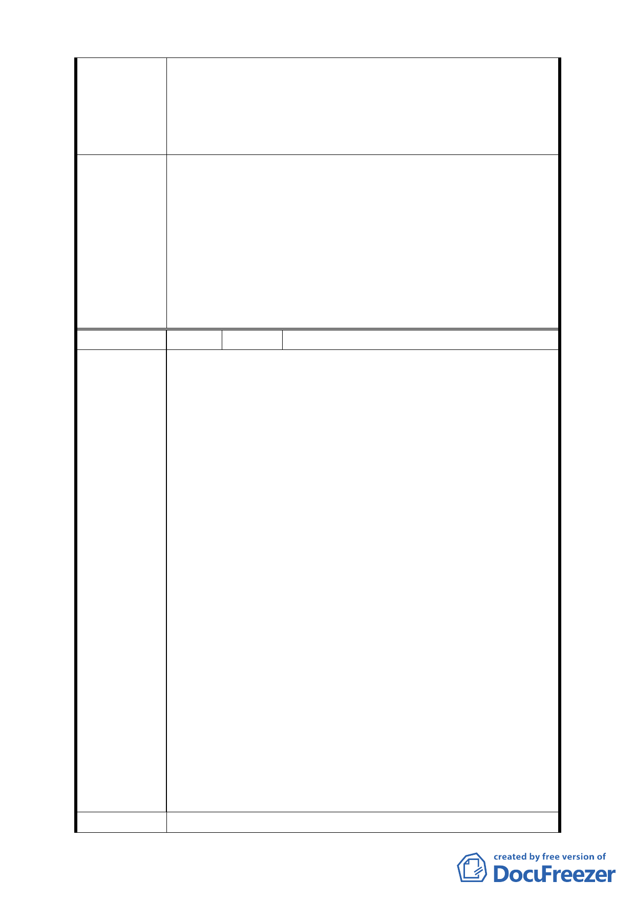

A2、B1、B2 街廓內臨接退縮 5 公尺人行道，其兩側每單一
土地細分規模之建築基地及 C2 街廓內需留設至少一處南北
向生態及及山稜視景廊道，其兩側建築物高度比依前開規定
辦理，自指定退縮地界線起 35 公尺範圍內之建築物高度比
不得超過 1.5」之規定。
大彎北段地區係屬「2010 年臺北好好看」之科技產業軸帶，
基於其規劃理念係為提供產業進駐誘因、帶動城市發展活
力，故區內「2010 年臺北好好看」申請案之「土地使用」
部分，其因申請「2010 年臺北好好看」所獲容積獎勵部分
委 員 會 決 議 得比照商三所允許之使用項目，惟不得作住宅之使用；至於
其餘部分仍應依本區 92 年公告實施之都市計畫規定辦理，
不得作住宅之使用。有關臺北好好看申請案之建築物高度管
制部分，經委員會決議採不記名投票方式表決結果為「建築
高度 70 公尺（上限）、視覺廊道 40 公尺（下限）」。
編 號 2 陳情人 奇泰建設有限公司等
一、目前大彎北段商業區之建物使用現況，大多違規作為
住宅使用，為避免都市計畫變更公告實施後，造成未
來有更大量之違規使用情事發生，故建議地上1至3層
維持商業使用 , 地上4層以上開放作為住宅使用，住
宅使用比例≦ 2/3 總容積，高度限制以不阻擋河岸
景觀，及免辦環境影響評估審查之 70 公尺為原則。
查內湖科技園區原定位為工業區，歷經前、後任市長
計11次之使用用途放寬，加上內科園區之土地取得成
本較低，而大彎北段當初重劃配地時，商業區土地成
本為住宅區之2倍，故在內科園區開放商業使用之影
響下，內科園區之商業使用早已取代大彎北段原設定
陳情理由
之商業使用，以致於目前大彎北段已興建完成之商業
區，多數均存在著住宅功能的使用，違反現行之使用
規定，故本區若再以限制 2/3 商業使用比例要求，
將與市場使用現況嚴重乖離，並損及原重劃配地時對
於原所有權人之權益。
二、另大彎北段之商業區、娛購區已有部份土地依現行之
法令完成開發建築，為避免不切現況發展，故建議視
覺廊道「街廓編號 A1、A2、B1、B2 街廓內臨接退縮
五公尺人行道其兩側每單一土地細分規模之建築基
地及C2街廓內須留設至少一處南北向生態及山稜視
景廊道，其兩側建築物高度比依前開規定辦理，自指
定退縮地界線起35公尺範圍內之建築物高度比不得
超過1.5」之規定，應予取消。
建 議 辦 法 （同上）
- 35 -